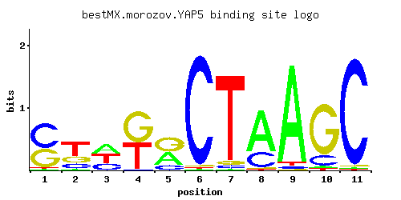

YAP5
YIR018W
Basic leucine zipper (bZIP) transcription factor
Best-performing DNA-binding model.

View and copy the recommended matrices ↘
A | 0.024 0.034 0.366 0.002 0.382 0.004 0.007 0.699 0.945 0.025 0.010 C | 0.544 0.185 0.264 0.010 0.148 0.974 0.036 0.266 0.020 0.167 0.970 G | 0.407 0.248 0.007 0.543 0.465 0.015 0.044 0.018 0.006 0.785 0.013 T | 0.025 0.533 0.364 0.444 0.005 0.007 0.914 0.017 0.029 0.024 0.008
A | 2 3 36 0 38 0 0 69 94 2 1 C | 54 18 26 1 14 97 3 26 2 16 97 G | 40 24 0 54 46 1 4 1 0 78 1 T | 2 53 36 44 0 0 91 1 2 2 0
A | -2.59 -2.24 0.13 -5.08 0.18 -4.38 -3.82 0.78 1.08 -2.55 -3.47 C | 1.11 0.03 0.38 -2.89 -0.20 1.69 -1.61 0.39 -2.20 -0.07 1.68 G | 0.82 0.32 -3.25 1.10 0.95 -2.48 -1.41 -2.30 -3.40 1.47 -2.63 T | -2.55 0.51 0.13 0.33 -4.16 -3.82 1.05 -2.94 -2.40 -2.59 -3.69
Alternative candidate matrices 4
Historical matrix candidates from the original ScerTF database. Expand a source to inspect its original logo, scores, and matrix values.
YAP5_AFoat et. al.P = 0.04265View matrix ↘
YAP5_BFoat et. al.P = 1.15e-08View matrix ↘
YAP5Harbison et. al.P = 0.003217View matrix ↘
YAP5Macisaac et. alP = 0.002047View matrix ↘
Gene-level annotations and interactions.
Genes bound in ChIP-chip experiments 167 genes
YBL107C, YBL108W, YBL109W, YBL111C, YBL112C, YBL113C, YBR057C, YBR190W, YBR191W, YCL045C, YCL065W, YCL066W, YCL067C, YCL068C, YCL074W, YCR028C, YCR039C, YCR040W, YCR041W, YCR105W, YCR107W, YDL082W, YDL083C, YDL114W, YDL115C, YDL155W, YDL191W, YDL223C, YDL224C, YDR252W, YDR366C, YDR368W, YDR370C, YDR371W, YDR449C, YDR450W, YDR470C, YDR471W, YDR543C, YDR544C, YDR545W, YEL054C, YEL074W, YEL075C, YEL076C, YEL076C-A, YER056C-A, YER074W, YER116C, YER117W, YER189W, YER190W, YFL062W, YFL063W, YFL064C, YFL065C, YGL030W, YGL031C, YGL093W, YGL094C, YGL103W, YGL104C, YGL115W, YGL189C, YGR117C, YGR118W, YGR148C, YGR149W, YGR175C, YGR176W, YGR254W, YGR295C, YGR296W, YHL048W, YHL049C, YHR021C, YHR021W-A, YHR036W, YHR063C, YHR087W, YHR091C, YHR141C, YHR142W, YHR203C, YHR204W, YIL018W, YIL128W, YIL129C, YIL133C, YIL148W, YIL149C, YIL173W, YIL174W, YIL175W, YIL177C, YJL042W, YJL134W, YJL135W, YJL136C, YJL188C, YJL189W, YJL190C, YJL225C, YJR044C, YJR070C, YJR161C, YKL049C, YKL079W, YLL063C, YLL065W, YLL066C, YLL067C, YLR047C, YLR048W, YLR185W, YLR207W, YLR447C, YLR448W, YLR462W, YLR463C, YLR464W, YLR465C, YLR466W, YLR467W, YML024W, YML025C, YML026C, YML063W, YML064C, YML073C, YML111W, YML124C, YML132W, YML133C, YMR015C, YMR135W-A, YMR142C, YMR143W, YMR165C, YNL069C, YNL236W, YNL302C, YNL336W, YNL337W, YNL338W, YNL339C, YNR029C, YNR030W, YOL120C, YOR234C, YOR292C, YOR293W, YOR318C, YOR319W, YPL079W, YPL080C, YPL090C, YPL200W, YPL201C, YPL283C, YPR061C, YPR062W, YPR080W, YPR131C, YPR132W, YPR202W, YPR203W
Genes affected by TF deletion 42 genes
YMR192W, YPL240C, YHR145C, YPL016W, YPL283C, YNL339C, YDR157W, YDR528W, YGR064W, YDR281C, YER057C, YML058W, YOR043W, YGR161W-B, YJL124C, YBR245C, YLR312W-A, YDL202W, YLR345W, YPR053C, YLR264W, YEL026W, YMR242C, YER072W, YHR219W, YIR018W, YMR037C, YNL046W, YBR185C, YHR136C, YLR424W, YCR031C, YER138W-A, YIL133C, YMR034C, YOL040C, YPL075W, YDR156W, YIR022W, YBL051C, YFL068W, YPR071W
Genes supported by both experiments 3 genes
YIL133C, YNL339C, YPL283C